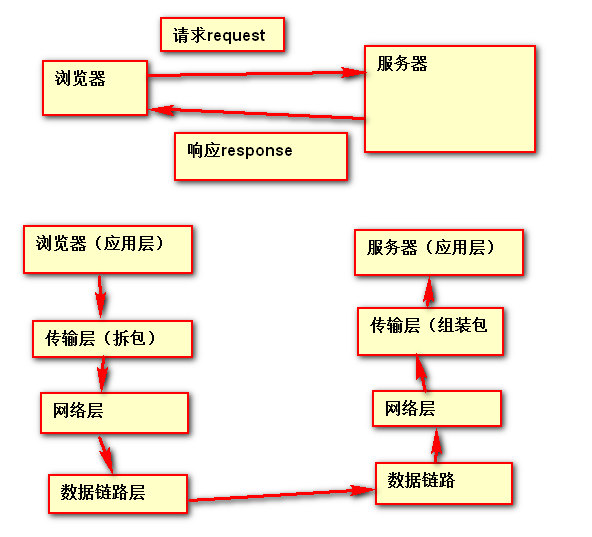
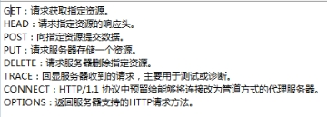

协议：
协议一定是双方或是多方的签订的。
1.TCP/IP协议族
- 这个协议族是规定我们浏览器和服务器之间的通信规则的。
- 网络的分层：
1.应用层
应用层指的是浏览器和服务器
协议：HTTP协议
2.传输层
将发送的数据拆包
协议：TCP UPD协议
3.网络层
负责发送文件
协议：IP协议
4.数据链路层
网路中接口，硬件层
2.HTTP协议
- 浏览器和服务器之间通信是基于请求和响应的。
- 浏览器向服务器发送请求，这个请求就相当于浏览器给服务器写了一封信。
- 服务器向浏览器发送响应，响应就相当于服务器给浏览器回信。
- 信的格式：
FROM:小明
TO:小红
Address:北京
Content:小红我想你
- HTTP协议就是规定浏览器和服务器之间通信的格式的，
浏览器和服务器之间的通信叫做报文。
- HTTP协议：超文本传输协议。
- 报文的整体格式：
报文首部
空行
报文体
- 首部又分成了两个部分：
1.报文首行
2.报文头
- 请求报文：
请求首行
请求头
空行
请求体
- 响应报文：
响应首行
响应头
空行
响应体
get请求报文
GET /day03/1.html HTTP/1.1
Accept: application/x-ms-application, image/jpeg, application/xaml+xml, image/gif, image/pjpeg, application/x-ms-xbap, */*
Accept-Language: en-US,zh-CN;q=0.7,ko-KR;q=0.3
User-Agent: Mozilla/4.0 (compatible; MSIE 8.0; Windows NT 6.1; WOW64; Trident/4.0; SLCC2; .NET CLR 2.0.50727; .NET CLR 3.5.30729; .NET CLR 3.0.30729; Media Center PC 6.0; InfoPath.3; .NET4.0C; .NET4.0E)
Accept-Encoding: gzip, deflate
Host: 127.0.0.1:8020
Connection: Keep-Alive
http://127.0.0.1:8020/day03/1.html
http://www.baidu.com
http://主机地址:端口号
get请求没有请求体，所以也看不到空行
get请求的请求参数是通过URL地址来发送的
请求报文的结构
请求首行
GET /day03/1.html HTTP/1.1
请求方式 资源路径 协议名/协议版本
请求头：
通过观察发现请求头中的内容都是一个属性名对应属性值的形式，
有的是一个属性对应一个值，有的是一个属性对应多个值
Accept: application/x-ms-application, image/jpeg, application/xaml+xml, image/gif, image/pjpeg, application/x-ms-xbap, */*
浏览器允许的文件的类型：*/* 代表任意类型
Accept-Language: en-US,zh-CN;q=0.7,ko-KR;q=0.3
允许语言：en-US表示英语 zh-CN表示中文简体
User-Agent: Mozilla/4.0 (compatible; MSIE 8.0; Windows NT 6.1; WOW64; Trident/4.0; SLCC2; .NET CLR 2.0.50727; .NET CLR 3.5.30729; .NET CLR 3.0.30729; Media Center PC 6.0; InfoPath.3; .NET4.0C; .NET4.0E)
浏览器的信息：
Accept-Encoding: gzip, deflate
允许的压缩格式：
Host: 127.0.0.1:8020
主机地址:
Connection: Keep-Alive
连接时间：Keep-Alive告诉服务器等我一会，等我将全部的资源都加载完你在断开连接
post请求报文
POST /day03/taget.html HTTP/1.1
Accept: application/x-ms-application, image/jpeg, application/xaml+xml, image/gif, image/pjpeg, application/x-ms-xbap, */*
Referer: http://127.0.0.1:8020/day03/1.html
Accept-Language: en-US,zh-CN;q=0.7,ko-KR;q=0.3
User-Agent: Mozilla/4.0 (compatible; MSIE 8.0; Windows NT 6.1; WOW64; Trident/4.0; SLCC2; .NET CLR 2.0.50727; .NET CLR 3.5.30729; .NET CLR 3.0.30729; Media Center PC 6.0; InfoPath.3; .NET4.0C; .NET4.0E)
Content-Type: application/x-www-form-urlencoded
Accept-Encoding: gzip, deflate
Host: 127.0.0.1:8020
Content-Length: 14
Connection: Keep-Alive
Cache-Control: no-cache
username=admin
get请求和post请求区别：
1。get请求通过url地址发送请求参数，请求参数可以直接在地址栏看见，不太安全。
post请求通过请求体来发送请求参数，地址栏不能直接看到，相对安全。
2.除了表单的method属性设置为post的情况，其余全都是get请求
3.一般提交表单时都用post请求
post请求报文
请求首行
POST /day03/taget.html HTTP/1.1
请求方式 资源地址 协议名/版本
请求头
Accept: application/x-ms-application, image/jpeg, application/xaml+xml, image/gif, image/pjpeg, application/x-ms-xbap, */*
Referer: http://127.0.0.1:8020/day03/1.html
请求的来源：
作用：
1.广告计费
2.防盗链
Accept-Language: en-US,zh-CN;q=0.7,ko-KR;q=0.3
User-Agent: Mozilla/4.0 (compatible; MSIE 8.0; Windows NT 6.1; WOW64; Trident/4.0; SLCC2; .NET CLR 2.0.50727; .NET CLR 3.5.30729; .NET CLR 3.0.30729; Media Center PC 6.0; InfoPath.3; .NET4.0C; .NET4.0E)
Content-Type: application/x-www-form-urlencoded
Accept-Encoding: gzip, deflate
Host: 127.0.0.1:8020
Content-Length: 14
Connection: Keep-Alive
Cache-Control: no-cache
空行
- 空行用来分割请求首部和请求体
请求体
- 用户发送给服务器的请求参数
响应报文
HTTP/1.1 200 OK
Date: Sat, 19 Mar 2016 06:23:22 GMT
Server: HttpComponents/4.1.3
Content-Length: 148
Content-Type: text/html
Connection: Keep-Alive
<!DOCTYPE html>
<html>
<head>
<meta charset="UTF-8">
<title></title>
</head>
<body>
<h1>??‘??ˉ??€??a??‘é?μ</h1>
</body>
</html>
响应报文：
响应首行
HTTP/1.1 200 OK
协议/版本 响应状态码 响应状态码的描述
常见的响应状态码：
200 响应成功 凡是2开头的全都是成功相关
404 资源未找到 凡是4开头的全都是浏览器的错误
500 服务器内部错误 凡是5开头的全都是服务器的错
302 请求的重定向 凡是3开头都和重定向相关
响应头
Date: Sat, 19 Mar 2016 06:23:22 GMT
响应的日期：格林威治标准时间
Server: HttpComponents/4.1.3
Content-Length: 148
Content-Type: text/html
响应体的类型：text/html表示请求体中的内容是一个HTML网页
Connection: Keep-Alive
空行
分割首部和体
响应体
<!DOCTYPE html>
<html>
<head>
<meta charset="UTF-8">
<title></title>
</head>
<body>
<h1>我是一个网页</h1>
</body>
</html>
状态码简单版
100 Continue 继续，一般在发送post请求时，已发送了http header之后服务端将返回此信息，表示确认，之后发送具体参数信息
200 OK 正常返回信息
201 Created 请求成功并且服务器创建了新的资源
202 Accepted 服务器已接受请求，但尚未处理
301 Moved Permanently 请求的网页已永久移动到新位置。
302 Found 临时性重定向。
303 See Other 临时性重定向，且总是使用 GET 请求新的 URI。
304 Not Modified 自从上次请求后，请求的网页未修改过。
400 Bad Request 服务器无法理解请求的格式，客户端不应当尝试再次使用相同的内容发起请求。
401 Unauthorized 请求未授权。
403 Forbidden 禁止访问。
404 Not Found 找不到如何与 URI 相匹配的资源。
500 Internal Server Error 最常见的服务器端错误。
503 Service Unavailable 服务器端暂时无法处理请求（可能是过载或维护）。
HTTP/1.1协议中共定义了八种方法（有时也叫“动作”）来表明Request-URI指定的资源的不同操作方式。
OPTIONS 返回服务器针对特定资源所支持的HTTP请求方法。也可以利用向Web服务器发送'*'的请求来测试服务器的功能性。
HEAD 向服务器索要与GET请求相一致的响应，只不过响应体将不会被返回。这一方法可以在不必传输整个响应内容的情况下，就可以获取包含在响应消息头中的元信息。
GET 向特定的资源发出请求。注意：GET方法不应当被用于产生“副作用”的操作中，例如在web app.中。其中一个原因是GET可能会被网络蜘蛛等随意访问。
POST 向指定资源提交数据进行处理请求（例如提交表单或者上传文件）。数据被包含在请求体中。POST请求可能会导致新的资源的建立和/或已有资源的修改。
PUT 向指定资源位置上传其最新内容。
DELETE 请求服务器删除Request-URI所标识的资源。
TRACE 返回显服务器收到的请求，主要用于测试或诊断。
CONNECT HTTP/1.1协议中预留给能够将连接改为管道方式的代理服务器。

另外有一个概念，http的增删改查，指的是PUT、DELETE、POST、GET